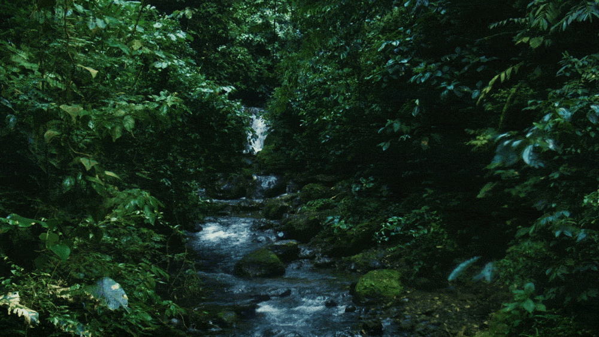

Waste Consumption
Home
Steps invovled
Info
Credits
Feedback

More Facts
Waste Consumption Sites
Site 1
Consumption & Waste
Visit Site 1
Site 2
US EPS
Visit Site 2
Site 3
The Nature Conservancy
Visit Site 3